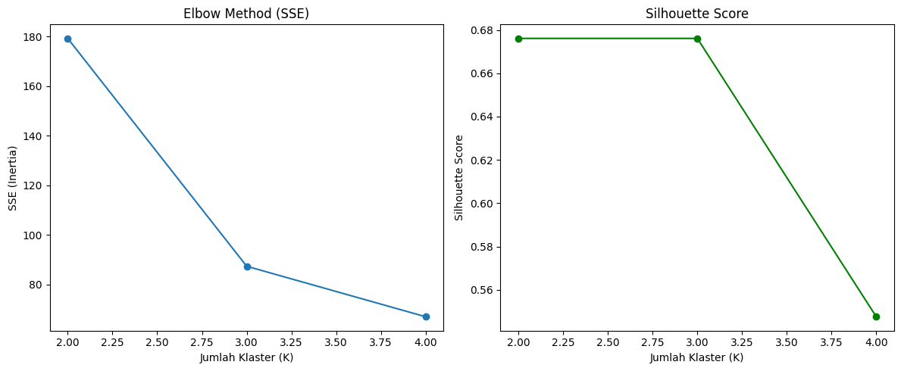

Klastering K-Means#
Pengertian K-Means adalah teknik klastering berbasis partisi yang digunakan untuk mengelompokkan data ke dalam K kelompok (cluster) berdasarkan kemiripan. Setiap cluster direpresentasikan oleh centroid, yaitu titik rata-rata dari seluruh data dalam cluster tersebut.
Tujuan dan Fungsi
Meminimalkan variasi dalam klaster (within-cluster variance)
Mengelompokkan objek dengan tujuan:
Objek dalam satu klaster sehomogen mungkin (mirip satu sama lain)
Objek antar klaster seheterogen mungkin (berbeda satu sama lain)
Evaluasi Hasil Klastering
Inertia:
Jumlah kuadrat jarak antara setiap titik dan centroid klasternya. Nilai yang lebih kecil menunjukkan klaster yang lebih kompak.
Silhouette Score:
Ukuran yang menunjukkan seberapa mirip suatu objek dengan klasternya sendiri dibandingkan dengan klaster lain. Nilai berkisar dari -1 hingga 1; semakin tinggi, semakin baik pemisahan antar klaster.
Elbow Method:
Digunakan untuk menentukan jumlah klaster (K) yang optimal. Titik “tekukan” (elbow) pada grafik inertia vs. K menandakan jumlah klaster yang ideal.
Klastering K-Means dengan 2 Klaster
import pandas as pd
from sklearn.cluster import KMeans
from sklearn.metrics import silhouette_score
# Membaca file CSV
df = pd.read_csv("data_iris.csv")
print(df.head()) # Menampilkan 5 baris pertama dari DataFrame
shilouette_scores = []
sse_scores = []
id class petal_length petal_width sepal_length sepal_width
0 1 Iris-setosa 1.4 0.2 5.1 3.5
1 2 Iris-setosa 1.4 0.2 4.9 3.0
2 3 Iris-setosa 1.3 0.2 4.7 3.2
3 4 Iris-setosa 1.5 0.2 4.6 3.1
4 5 Iris-setosa 1.4 0.2 5.0 3.6
X = df.drop(columns=["class", "id"]).values
print(X)
[[1.4 0.2 5.1 3.5]
[1.4 0.2 4.9 3. ]
[1.3 0.2 4.7 3.2]
[1.5 0.2 4.6 3.1]
[1.4 0.2 5. 3.6]
[1.7 0.4 5.4 3.9]
[1.4 0.3 4.6 3.4]
[1.5 0.2 5. 3.4]
[1.4 0.2 4.4 2.9]
[1.5 0.1 4.9 3.1]
[1.5 0.2 5.4 3.7]
[1.6 0.2 4.8 3.4]
[1.4 0.1 4.8 3. ]
[1.1 0.1 4.3 3. ]
[1.2 0.2 5.8 4. ]
[1.5 0.4 5.7 4.4]
[1.3 0.4 5.4 3.9]
[1.4 0.3 5.1 3.5]
[1.7 0.3 5.7 3.8]
[1.5 0.3 5.1 3.8]
[1.7 0.2 5.4 3.4]
[1.5 0.4 5.1 3.7]
[1. 0.2 4.6 3.6]
[1.7 0.5 5.1 3.3]
[1.9 0.2 4.8 3.4]
[1.6 0.2 5. 3. ]
[1.6 0.4 5. 3.4]
[1.5 0.2 5.2 3.5]
[1.4 0.2 5.2 3.4]
[1.6 0.2 4.7 3.2]
[1.6 0.2 4.8 3.1]
[1.5 0.4 5.4 3.4]
[1.5 0.1 5.2 4.1]
[1.4 0.2 5.5 4.2]
[1.5 0.1 4.9 3.1]
[1.2 0.2 5. 3.2]
[1.3 0.2 5.5 3.5]
[1.5 0.1 4.9 3.1]
[1.3 0.2 4.4 3. ]
[1.5 0.2 5.1 3.4]
[1.3 0.3 5. 3.5]
[1.3 0.3 4.5 2.3]
[1.3 0.2 4.4 3.2]
[1.6 0.6 5. 3.5]
[1.9 0.4 5.1 3.8]
[1.4 0.3 4.8 3. ]
[1.6 0.2 5.1 3.8]
[1.4 0.2 4.6 3.2]
[1.5 0.2 5.3 3.7]
[1.4 0.2 5. 3.3]
[4.7 1.4 7. 3.2]
[4.5 1.5 6.4 3.2]
[4.9 1.5 6.9 3.1]
[4. 1.3 5.5 2.3]
[4.6 1.5 6.5 2.8]
[4.5 1.3 5.7 2.8]
[4.7 1.6 6.3 3.3]
[3.3 1. 4.9 2.4]
[4.6 1.3 6.6 2.9]
[3.9 1.4 5.2 2.7]
[3.5 1. 5. 2. ]
[4.2 1.5 5.9 3. ]
[4. 1. 6. 2.2]
[4.7 1.4 6.1 2.9]
[3.6 1.3 5.6 2.9]
[4.4 1.4 6.7 3.1]
[4.5 1.5 5.6 3. ]
[4.1 1. 5.8 2.7]
[4.5 1.5 6.2 2.2]
[3.9 1.1 5.6 2.5]
[4.8 1.8 5.9 3.2]
[4. 1.3 6.1 2.8]
[4.9 1.5 6.3 2.5]
[4.7 1.2 6.1 2.8]
[4.3 1.3 6.4 2.9]
[4.4 1.4 6.6 3. ]
[4.8 1.4 6.8 2.8]
[5. 1.7 6.7 3. ]
[4.5 1.5 6. 2.9]
[3.5 1. 5.7 2.6]
[3.8 1.1 5.5 2.4]
[3.7 1. 5.5 2.4]
[3.9 1.2 5.8 2.7]
[5.1 1.6 6. 2.7]
[4.5 1.5 5.4 3. ]
[4.5 1.6 6. 3.4]
[4.7 1.5 6.7 3.1]
[4.4 1.3 6.3 2.3]
[4.1 1.3 5.6 3. ]
[4. 1.3 5.5 2.5]
[4.4 1.2 5.5 2.6]
[4.6 1.4 6.1 3. ]
[4. 1.2 5.8 2.6]
[3.3 1. 5. 2.3]
[4.2 1.3 5.6 2.7]
[4.2 1.2 5.7 3. ]
[4.2 1.3 5.7 2.9]
[4.3 1.3 6.2 2.9]
[3. 1.1 5.1 2.5]
[4.1 1.3 5.7 2.8]
[6. 2.5 6.3 3.3]
[5.1 1.9 5.8 2.7]
[5.9 2.1 7.1 3. ]
[5.6 1.8 6.3 2.9]
[5.8 2.2 6.5 3. ]
[6.6 2.1 7.6 3. ]
[4.5 1.7 4.9 2.5]
[6.3 1.8 7.3 2.9]
[5.8 1.8 6.7 2.5]
[6.1 2.5 7.2 3.6]
[5.1 2. 6.5 3.2]
[5.3 1.9 6.4 2.7]
[5.5 2.1 6.8 3. ]
[5. 2. 5.7 2.5]
[5.1 2.4 5.8 2.8]
[5.3 2.3 6.4 3.2]
[5.5 1.8 6.5 3. ]
[6.7 2.2 7.7 3.8]
[6.9 2.3 7.7 2.6]
[5. 1.5 6. 2.2]
[5.7 2.3 6.9 3.2]
[4.9 2. 5.6 2.8]
[6.7 2. 7.7 2.8]
[4.9 1.8 6.3 2.7]
[5.7 2.1 6.7 3.3]
[6. 1.8 7.2 3.2]
[4.8 1.8 6.2 2.8]
[4.9 1.8 6.1 3. ]
[5.6 2.1 6.4 2.8]
[5.8 1.6 7.2 3. ]
[6.1 1.9 7.4 2.8]
[6.4 2. 7.9 3.8]
[5.6 2.2 6.4 2.8]
[5.1 1.5 6.3 2.8]
[5.6 1.4 6.1 2.6]
[6.1 2.3 7.7 3. ]
[5.6 2.4 6.3 3.4]
[5.5 1.8 6.4 3.1]
[4.8 1.8 6. 3. ]
[5.4 2.1 6.9 3.1]
[5.6 2.4 6.7 3.1]
[5.1 2.3 6.9 3.1]
[5.1 1.9 5.8 2.7]
[5.9 2.3 6.8 3.2]
[5.7 2.5 6.7 3.3]
[5.2 2.3 6.7 3. ]
[5. 1.9 6.3 2.5]
[5.2 2. 6.5 3. ]
[5.4 2.3 6.2 3.4]
[5.1 1.8 5.9 3. ]]
Klastering K-Means dengan 2 Klaster
kmeans2 = KMeans(n_clusters=2, random_state=0, n_init="auto", max_iter=300, tol=0.0001, verbose=0,copy_x=True,algorithm="lloyd").fit(X)
print("Hasil label cluster:", kmeans2.labels_)
Hasil label cluster: [0 0 0 0 0 0 0 0 0 0 0 0 0 0 0 0 0 0 0 0 0 0 0 0 0 0 0 0 0 0 0 0 0 0 0 0 0
0 0 0 0 0 0 0 0 0 0 0 0 0 1 1 1 1 1 1 1 0 1 1 1 1 1 1 1 1 1 1 1 1 1 1 1 1
1 1 1 1 1 1 1 1 1 1 1 1 1 1 1 1 1 1 1 0 1 1 1 1 0 1 1 1 1 1 1 1 1 1 1 1 1
1 1 1 1 1 1 1 1 1 1 1 1 1 1 1 1 1 1 1 1 1 1 1 1 1 1 1 1 1 1 1 1 1 1 1 1 1
1 1]
print("Centroid cluster:", kmeans2.cluster_centers_)
Centroid cluster: [[1.56226415 0.28867925 5.00566038 3.36037736]
[4.95876289 1.69587629 6.30103093 2.88659794]]
score2 = silhouette_score(X, kmeans2.labels_)
print("Silhouette Score:", score2)
shilouette_scores.append(score2)
Silhouette Score: 0.6808136202936811
sse2 = kmeans2.inertia_
print("SSE (Inertia):", sse2)
sse_scores.append(sse2)
SSE (Inertia): 152.36870647733906
Klastering K-Means dengan 3 Klaster
kmeans3 = KMeans(n_clusters=3, random_state=0, n_init="auto", max_iter=300, tol=0.0001, verbose=0,copy_x=True,algorithm="lloyd").fit(X)
print("Hasil label cluster:", kmeans3.labels_)
Hasil label cluster: [1 1 1 1 1 1 1 1 1 1 1 1 1 1 1 1 1 1 1 1 1 1 1 1 1 1 1 1 1 1 1 1 1 1 1 1 1
1 1 1 1 1 1 1 1 1 1 1 1 1 2 0 2 0 0 0 0 0 0 0 0 0 0 0 0 0 0 0 0 0 0 0 0 0
0 0 0 2 0 0 0 0 0 0 0 0 0 0 0 0 0 0 0 0 0 0 0 0 0 0 2 0 2 2 2 2 0 2 2 2 2
2 2 0 0 2 2 2 2 0 2 0 2 0 2 2 0 0 2 2 2 2 2 0 2 2 2 2 0 2 2 2 0 2 2 2 0 2
2 0]
score3 = silhouette_score(X, kmeans3.labels_)
print("Silhouette Score:", score3)
shilouette_scores.append(score3)
Silhouette Score: 0.5509643746707433
print("Centroid cluster:", kmeans3.cluster_centers_)
Centroid cluster: [[4.38852459 1.43442623 5.88360656 2.74098361]
[1.464 0.244 5.006 3.418 ]
[5.71538462 2.05384615 6.85384615 3.07692308]]
sse3 = kmeans3.inertia_
print("SSE (Inertia):", sse3)
sse_scores.append(sse3)
SSE (Inertia): 78.94506582597731
Klastering K-Means dengan 4 Klaster
kmeans4 = KMeans(n_clusters=4, random_state=0, n_init="auto", max_iter=300, tol=0.0001, verbose=0,copy_x=True,algorithm="lloyd").fit(X)
print("Hasil label cluster:", kmeans4.labels_)
Hasil label cluster: [1 1 1 1 1 1 1 1 1 1 1 1 1 1 1 1 1 1 1 1 1 1 1 1 1 1 1 1 1 1 1 1 1 1 1 1 1
1 1 1 1 1 1 1 1 1 1 1 1 1 3 3 3 0 3 0 3 0 3 0 0 0 0 3 0 3 0 0 3 0 3 0 3 3
3 3 3 3 3 0 0 0 0 3 0 3 3 3 0 0 0 3 0 0 0 0 0 3 0 0 2 3 2 2 2 2 0 2 2 2 3
3 2 3 3 2 2 2 2 3 2 3 2 3 2 2 3 3 2 2 2 2 2 3 3 2 2 2 3 2 2 2 3 2 2 2 3 3
2 3]
print("Centroid cluster:", kmeans4.cluster_centers_)
Centroid cluster: [[3.96071429 1.22857143 5.53214286 2.63571429]
[1.464 0.244 5.006 3.418 ]
[5.846875 2.13125 6.9125 3.1 ]
[4.815 1.625 6.2525 2.855 ]]
score4 = silhouette_score(X, kmeans4.labels_)
print("Silhouette Score:", score4)
shilouette_scores.append(score4)
Silhouette Score: 0.49782569010954614
sse4 = kmeans4.inertia_
print("SSE (Inertia):", sse4)
sse_scores.append(sse4)
SSE (Inertia): 57.317873214285704
Evaluasi Hasil Klustering
import matplotlib.pyplot as plt
# 4. Visualisasi SSE dan Silhouette Score
plt.figure(figsize=(12, 5))
# Elbow Plot
plt.subplot(1, 2, 1)
plt.plot(range(2, 5), sse_scores, marker='o')
plt.title('Elbow Method (SSE)')
plt.xlabel('Jumlah Klaster (K)')
plt.ylabel('SSE (Inertia)')
# Silhouette Score Plot
plt.subplot(1, 2, 2)
plt.plot(range(2, 5), shilouette_scores, marker='o', color='green')
plt.title('Silhouette Score')
plt.xlabel('Jumlah Klaster (K)')
plt.ylabel('Silhouette Score')
plt.tight_layout()
plt.show()

Klastering menggunakan data dengan label class#
import pandas as pd
from sklearn.cluster import KMeans
from sklearn.metrics import silhouette_score
from sklearn.preprocessing import LabelEncoder
# Membaca file CSV
df = pd.read_csv("data_iris.csv")
shilouette_scores_class = []
sse_scores_class = []
label_encoder = LabelEncoder()
df['class'] = label_encoder.fit_transform(df['class'])
X = df.drop(columns=["id"]).values
print(X) # Menampilkan 5 baris pertama dari DataFrame
[[0. 1.4 0.2 5.1 3.5]
[0. 1.4 0.2 4.9 3. ]
[0. 1.3 0.2 4.7 3.2]
[0. 1.5 0.2 4.6 3.1]
[0. 1.4 0.2 5. 3.6]
[0. 1.7 0.4 5.4 3.9]
[0. 1.4 0.3 4.6 3.4]
[0. 1.5 0.2 5. 3.4]
[0. 1.4 0.2 4.4 2.9]
[0. 1.5 0.1 4.9 3.1]
[0. 1.5 0.2 5.4 3.7]
[0. 1.6 0.2 4.8 3.4]
[0. 1.4 0.1 4.8 3. ]
[0. 1.1 0.1 4.3 3. ]
[0. 1.2 0.2 5.8 4. ]
[0. 1.5 0.4 5.7 4.4]
[0. 1.3 0.4 5.4 3.9]
[0. 1.4 0.3 5.1 3.5]
[0. 1.7 0.3 5.7 3.8]
[0. 1.5 0.3 5.1 3.8]
[0. 1.7 0.2 5.4 3.4]
[0. 1.5 0.4 5.1 3.7]
[0. 1. 0.2 4.6 3.6]
[0. 1.7 0.5 5.1 3.3]
[0. 1.9 0.2 4.8 3.4]
[0. 1.6 0.2 5. 3. ]
[0. 1.6 0.4 5. 3.4]
[0. 1.5 0.2 5.2 3.5]
[0. 1.4 0.2 5.2 3.4]
[0. 1.6 0.2 4.7 3.2]
[0. 1.6 0.2 4.8 3.1]
[0. 1.5 0.4 5.4 3.4]
[0. 1.5 0.1 5.2 4.1]
[0. 1.4 0.2 5.5 4.2]
[0. 1.5 0.1 4.9 3.1]
[0. 1.2 0.2 5. 3.2]
[0. 1.3 0.2 5.5 3.5]
[0. 1.5 0.1 4.9 3.1]
[0. 1.3 0.2 4.4 3. ]
[0. 1.5 0.2 5.1 3.4]
[0. 1.3 0.3 5. 3.5]
[0. 1.3 0.3 4.5 2.3]
[0. 1.3 0.2 4.4 3.2]
[0. 1.6 0.6 5. 3.5]
[0. 1.9 0.4 5.1 3.8]
[0. 1.4 0.3 4.8 3. ]
[0. 1.6 0.2 5.1 3.8]
[0. 1.4 0.2 4.6 3.2]
[0. 1.5 0.2 5.3 3.7]
[0. 1.4 0.2 5. 3.3]
[1. 4.7 1.4 7. 3.2]
[1. 4.5 1.5 6.4 3.2]
[1. 4.9 1.5 6.9 3.1]
[1. 4. 1.3 5.5 2.3]
[1. 4.6 1.5 6.5 2.8]
[1. 4.5 1.3 5.7 2.8]
[1. 4.7 1.6 6.3 3.3]
[1. 3.3 1. 4.9 2.4]
[1. 4.6 1.3 6.6 2.9]
[1. 3.9 1.4 5.2 2.7]
[1. 3.5 1. 5. 2. ]
[1. 4.2 1.5 5.9 3. ]
[1. 4. 1. 6. 2.2]
[1. 4.7 1.4 6.1 2.9]
[1. 3.6 1.3 5.6 2.9]
[1. 4.4 1.4 6.7 3.1]
[1. 4.5 1.5 5.6 3. ]
[1. 4.1 1. 5.8 2.7]
[1. 4.5 1.5 6.2 2.2]
[1. 3.9 1.1 5.6 2.5]
[1. 4.8 1.8 5.9 3.2]
[1. 4. 1.3 6.1 2.8]
[1. 4.9 1.5 6.3 2.5]
[1. 4.7 1.2 6.1 2.8]
[1. 4.3 1.3 6.4 2.9]
[1. 4.4 1.4 6.6 3. ]
[1. 4.8 1.4 6.8 2.8]
[1. 5. 1.7 6.7 3. ]
[1. 4.5 1.5 6. 2.9]
[1. 3.5 1. 5.7 2.6]
[1. 3.8 1.1 5.5 2.4]
[1. 3.7 1. 5.5 2.4]
[1. 3.9 1.2 5.8 2.7]
[1. 5.1 1.6 6. 2.7]
[1. 4.5 1.5 5.4 3. ]
[1. 4.5 1.6 6. 3.4]
[1. 4.7 1.5 6.7 3.1]
[1. 4.4 1.3 6.3 2.3]
[1. 4.1 1.3 5.6 3. ]
[1. 4. 1.3 5.5 2.5]
[1. 4.4 1.2 5.5 2.6]
[1. 4.6 1.4 6.1 3. ]
[1. 4. 1.2 5.8 2.6]
[1. 3.3 1. 5. 2.3]
[1. 4.2 1.3 5.6 2.7]
[1. 4.2 1.2 5.7 3. ]
[1. 4.2 1.3 5.7 2.9]
[1. 4.3 1.3 6.2 2.9]
[1. 3. 1.1 5.1 2.5]
[1. 4.1 1.3 5.7 2.8]
[2. 6. 2.5 6.3 3.3]
[2. 5.1 1.9 5.8 2.7]
[2. 5.9 2.1 7.1 3. ]
[2. 5.6 1.8 6.3 2.9]
[2. 5.8 2.2 6.5 3. ]
[2. 6.6 2.1 7.6 3. ]
[2. 4.5 1.7 4.9 2.5]
[2. 6.3 1.8 7.3 2.9]
[2. 5.8 1.8 6.7 2.5]
[2. 6.1 2.5 7.2 3.6]
[2. 5.1 2. 6.5 3.2]
[2. 5.3 1.9 6.4 2.7]
[2. 5.5 2.1 6.8 3. ]
[2. 5. 2. 5.7 2.5]
[2. 5.1 2.4 5.8 2.8]
[2. 5.3 2.3 6.4 3.2]
[2. 5.5 1.8 6.5 3. ]
[2. 6.7 2.2 7.7 3.8]
[2. 6.9 2.3 7.7 2.6]
[2. 5. 1.5 6. 2.2]
[2. 5.7 2.3 6.9 3.2]
[2. 4.9 2. 5.6 2.8]
[2. 6.7 2. 7.7 2.8]
[2. 4.9 1.8 6.3 2.7]
[2. 5.7 2.1 6.7 3.3]
[2. 6. 1.8 7.2 3.2]
[2. 4.8 1.8 6.2 2.8]
[2. 4.9 1.8 6.1 3. ]
[2. 5.6 2.1 6.4 2.8]
[2. 5.8 1.6 7.2 3. ]
[2. 6.1 1.9 7.4 2.8]
[2. 6.4 2. 7.9 3.8]
[2. 5.6 2.2 6.4 2.8]
[2. 5.1 1.5 6.3 2.8]
[2. 5.6 1.4 6.1 2.6]
[2. 6.1 2.3 7.7 3. ]
[2. 5.6 2.4 6.3 3.4]
[2. 5.5 1.8 6.4 3.1]
[2. 4.8 1.8 6. 3. ]
[2. 5.4 2.1 6.9 3.1]
[2. 5.6 2.4 6.7 3.1]
[2. 5.1 2.3 6.9 3.1]
[2. 5.1 1.9 5.8 2.7]
[2. 5.9 2.3 6.8 3.2]
[2. 5.7 2.5 6.7 3.3]
[2. 5.2 2.3 6.7 3. ]
[2. 5. 1.9 6.3 2.5]
[2. 5.2 2. 6.5 3. ]
[2. 5.4 2.3 6.2 3.4]
[2. 5.1 1.8 5.9 3. ]]
Klastering K-Means dengan 2 Klaster
kmeansc = KMeans(n_clusters=2, random_state=0, n_init="auto", max_iter=300, tol=0.0001, verbose=0,copy_x=True,algorithm="lloyd").fit(X)
print("Hasil label cluster:", kmeansc.labels_)
Hasil label cluster: [0 0 0 0 0 0 0 0 0 0 0 0 0 0 0 0 0 0 0 0 0 0 0 0 0 0 0 0 0 0 0 0 0 0 0 0 0
0 0 0 0 0 0 0 0 0 0 0 0 0 1 1 1 1 1 1 1 0 1 1 1 1 1 1 1 1 1 1 1 1 1 1 1 1
1 1 1 1 1 1 1 1 1 1 1 1 1 1 1 1 1 1 1 1 1 1 1 1 0 1 1 1 1 1 1 1 1 1 1 1 1
1 1 1 1 1 1 1 1 1 1 1 1 1 1 1 1 1 1 1 1 1 1 1 1 1 1 1 1 1 1 1 1 1 1 1 1 1
1 1]
print("Centroid cluster:", kmeansc.cluster_centers_)
Centroid cluster: [[0.03846154 1.52884615 0.275 5.00576923 3.38076923]
[1.51020408 4.94183673 1.68877551 6.2877551 2.88061224]]
scorec = silhouette_score(X, kmeansc.labels_)
print("Silhouette Score:", scorec)
shilouette_scores_class.append(scorec)
Silhouette Score: 0.6761002460735731
ssec = kmeansc.inertia_
print("SSE (Inertia):", ssec)
sse_scores_class.append(ssec)
SSE (Inertia): 179.26073390894823
Klastering K-Means dengan 3 Klaster
kmeansc3 = KMeans(n_clusters=3, random_state=0, n_init="auto", max_iter=300, tol=0.0001, verbose=0,copy_x=True,algorithm="lloyd").fit(X)
print("Hasil label cluster:", kmeansc3.labels_)
Hasil label cluster: [1 1 1 1 1 1 1 1 1 1 1 1 1 1 1 1 1 1 1 1 1 1 1 1 1 1 1 1 1 1 1 1 1 1 1 1 1
1 1 1 1 1 1 1 1 1 1 1 1 1 0 0 0 0 0 0 0 0 0 0 0 0 0 0 0 0 0 0 0 0 0 0 0 0
0 0 0 2 0 0 0 0 0 0 0 0 0 0 0 0 0 0 0 0 0 0 0 0 0 0 2 2 2 2 2 2 0 2 2 2 2
2 2 2 2 2 2 2 2 2 2 2 2 2 2 2 2 2 2 2 2 2 2 2 2 2 2 2 2 2 2 2 2 2 2 2 2 2
2 2]
print("Centroid cluster:", kmeansc3.cluster_centers_)
Centroid cluster: [[1.02 4.25 1.326 5.9 2.76 ]
[0. 1.464 0.244 5.006 3.418]
[1.98 5.562 2.026 6.624 2.984]]
scorec3 = silhouette_score(X, kmeansc.labels_)
print("Silhouette Score:", scorec3)
shilouette_scores_class.append(scorec3)
Silhouette Score: 0.6761002460735731
ssec3 = kmeansc3.inertia_
print("SSE (Inertia):", ssec3)
sse_scores_class.append(ssec3)
SSE (Inertia): 87.35400000000001
Klastering K-Means dengan 4 Klaster
kmeansc4 = KMeans(n_clusters=4, random_state=0, n_init="auto", max_iter=300, tol=0.0001, verbose=0,copy_x=True,algorithm="lloyd").fit(X)
print("Hasil label cluster:", kmeansc4.labels_)
Hasil label cluster: [1 1 1 1 1 1 1 1 1 1 1 1 1 1 1 1 1 1 1 1 1 1 1 1 1 1 1 1 1 1 1 1 1 1 1 1 1
1 1 1 1 1 1 1 1 1 1 1 1 1 0 0 0 0 0 0 0 0 0 0 0 0 0 0 0 0 0 0 0 0 0 0 0 0
0 0 0 2 0 0 0 0 0 0 0 0 0 0 0 0 0 0 0 0 0 0 0 0 0 0 2 2 3 2 2 3 0 3 2 3 2
2 2 2 2 2 2 3 3 2 2 2 3 2 2 3 2 2 2 3 3 3 2 2 2 3 2 2 2 2 2 2 2 2 2 2 2 2
2 2]
print("Centroid cluster:", kmeansc4.cluster_centers_)
Centroid cluster: [[1.02 4.25 1.326 5.9 2.76 ]
[0. 1.464 0.244 5.006 3.418 ]
[1.97368421 5.32894737 2.01842105 6.35526316 2.93947368]
[2. 6.3 2.05 7.475 3.125 ]]
scorec4 = silhouette_score(X, kmeansc4.labels_)
print("Silhouette Score:", scorec4)
shilouette_scores_class.append(scorec4)
Silhouette Score: 0.5476040150107029
ssec4 = kmeansc4.inertia_
print("SSE (Inertia):", ssec4)
sse_scores_class.append(ssec4)
SSE (Inertia): 66.99028421052631
import matplotlib.pyplot as plt
# 4. Visualisasi SSE dan Silhouette Score
plt.figure(figsize=(12, 5))
# Elbow Plot
plt.subplot(1, 2, 1)
plt.plot(range(2, 5), sse_scores_class, marker='o')
plt.title('Elbow Method (SSE)')
plt.xlabel('Jumlah Klaster (K)')
plt.ylabel('SSE (Inertia)')
# Silhouette Score Plot
plt.subplot(1, 2, 2)
plt.plot(range(2, 5), shilouette_scores_class, marker='o', color='green')
plt.title('Silhouette Score')
plt.xlabel('Jumlah Klaster (K)')
plt.ylabel('Silhouette Score')
plt.tight_layout()
plt.show()
